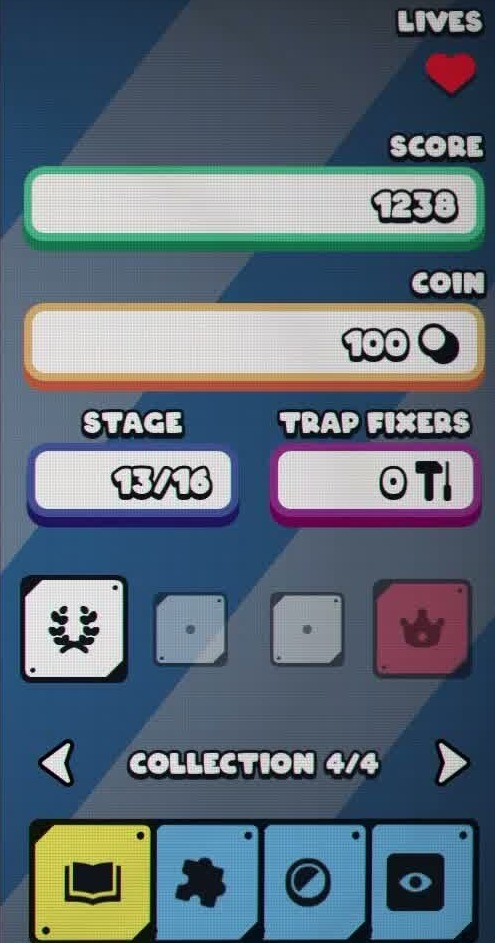
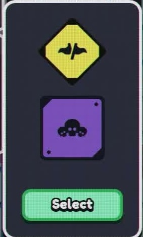

可筛选图鉴数据库
把图鉴从“章节阅读”升级成“查表工具”。你可以按类型、用途、准确度筛选，也可以直接搜索条目名、用途或说明。
| 图 | 条目 | 类型 | 用途 | 准确度 | 来源 |
|---|---|---|---|---|---|
 |
紫印格 封印状态，和揭示节奏、场面状态判断相关。 |
机制格 | 风险 | 成就推断 | Steam 成就图标 |
 |
红印格 高风险或敌性提示，与紫印并列形成状态识别体系。 |
机制格 | 风险 | 成就推断 | Steam 成就图标 |
 |
双印同格 同一格叠加两类印，推导时应当视为组合状态。 |
机制格 | 风险 | 成就推断 | Steam 成就图标 |
| 陷阱格 随进度进入随机池的负面场地机制。 |
机制格 | 风险 | 成就推断 | Steam 成就图标 | |
 |
敌怪格 敌性占位会改变邻域判断和展开路线。 |
机制格 | 风险 | 成就推断 | Steam 成就图标 |
 |
零敌整板 无敌怪条件下完成整板揭示，用于理解敌怪维度。 |
机制格 | 冲分 | 成就推断 | Steam 成就图标 |
 |
三阶格子收藏 高阶格子收集目标，适合中后期构筑追求。 |
格子升级 | 冲分 | 成就推断 | Steam 成就图标 |
 |
棋类升级线 国际象棋主题升级，偏套装协同。 |
格子升级 | 冲分 | 成就推断 | Steam 成就图标 |
 |
盘面修饰升级 向棋盘引入新元素或新交互，需实机核对具体名。 |
格子升级 | 情报 | 攻略站归类 | 公开素材/本站整理 |
 |
生命缓冲 降低误点惩罚，开荒优先级高。 |
永久升级 | 生存 | 攻略站归类 | 攻略站整理 |
 |
金币与商店 提高清盘收益、折扣、刷新或商品位，是滚雪球核心。 |
永久升级 | 经济 | 攻略站归类 | Steam 成就图标 |
 |
信息增益 提高揭示与反馈，降低纯猜概率。 |
永久升级 | 情报 | 攻略站归类 | 公开素材/本站整理 |
 |
Boss 对策 服务于限时和陷阱环境的稳定性。 |
永久升级 | Boss | 攻略站归类 | 公开素材/本站整理 |
 |
金币增益牌 一次性收益牌，适合经济线已能转化收益时使用。 |
消耗牌 | 经济 | 攻略站归类 | 公开素材/本站整理 |
|
揭示探雷牌 直接压缩未知集合，是 Boss 与死局保险。 |
消耗牌 | 情报 | 官方确认 | 预告片/公开素材 |
 |
生命回复牌 把失误转为可继续推进的容错资源。 |
消耗牌 | 生存 | 攻略站归类 | 公开素材/本站整理 |
 |
节奏操控牌 冻结、重整或路线选择类效果需要实机确认。 |
消耗牌 | Boss | 待实机核对 | 公开素材/本站整理 |